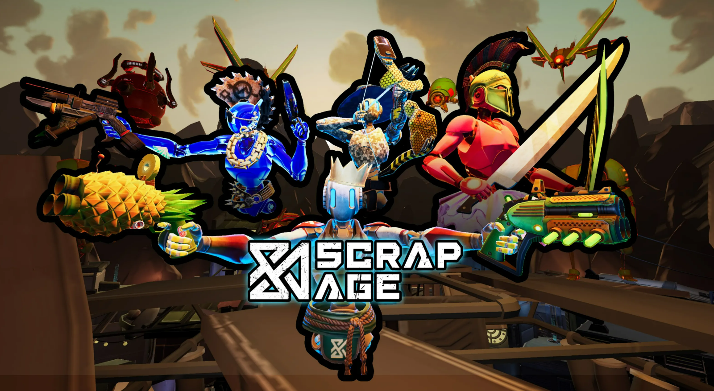
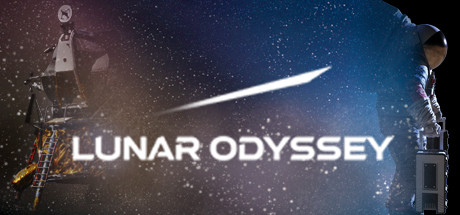

WWE 2K25 is a professional wrestling video game developed by Visual Concepts and published by 2K where I worked as part of the Common UI team.
C++
JSON
Proprietary Engine
Overview:
Much of my work in 2K25 involved feature work and coordination with other departments and disciplines. I started to write Technical Design documents for new features and proposals to improve existing features. I coordinated with designers and provided engineering support for new UI screens that were going to be added to 2K25, espeically for Universe mode.
Challenges:
One of the most significant features that was being introduced to WWE 2K25 was the intergender matchups. In previous games matchups would always be gender restricted but for this cycle that would no longer be the case. I was assigned with removing this restriction for UI screens across the project.
Solution:
The solution to this task was really to break the problem up into different tasks. The first task was to handle championship belts which now needed to allow for Male, Female, and the new "Any" option for gender. I also needed to account for localization issues with championship belts. Languages like Spanish and Italian are romance languages which have gendered words. So words like "champion" and "champions" are gendered. Before we would check the belt's gender category to display the correct gendered word. With the "Any Gender" belts, I now needed to check who is holding the championship rather than what the belt gender allowed. Furthermore there are also intergender tag belts where two superstars are assigned to a belt so I needed to check the gender of both belt holders in that case to display the correct word for champion in other languages. Next was needing the find all the places in the project where the term "Champion" exists. Typically I can search the code base via Visual Assist X, but there are several JSON files and other file types that aren't convenient to search through. Fortunately I had a teammate suggest a tool called Agent Ransack that was integral to me finding places where terms and other keywords were used across the project. This was one task that was broken up into smaller more managable tasks. Other sub tasks that were handled for the intergender feature included Character Select, Battle Royal Modes, Tournamnets, Universe Mode Intergender enabling, and others. A majority of which I handled.

Scrap Age
Scrap Age is a fast-paced, roguelike VR arena shooter that I worked on during my time with Visual Purple. I was responsible for getting the vertical slice done to show to the CEO. I was also the only programmer for the first 2 months of the project so I wrote many of the core systems.
Unreal
C++
Blueprints
Overview:
This project was a major step in my game development career. I was able to learn several areas of game development in Unreal, such as AI, animation progamming, weapon systems, 3Cs, VR interaction, and audio engineering.
Challenges:
One of the major challenges was handling much of the technical animation work. On the project we had a few animators that could create any animation but without any technical animators I needed to learn a lot about the animation systems in Unreal and figure out what animations need to be created.
Solution:
The solution was very simple. First this isn't the first VR project in the company so I was able to look at the previous project and study how it was done before. Next was to establish a great line of comunication with animation and design so that I could meet expectations. I needed to coordinate with animation for VR hand poses and animations that would trigger when firing a weapon for example. I also needed to handle the placement of held objects within the hand so it looked correct. Working side by side with an animator I was able to explain that a hand pose would be needed to hold onto a particular mesh and then I would show them the asset and we would move forward from there. Not only was there hand poses but also the challenge of animation with AI. Enemies needed both passive and combat stances for movement. Also several directional hit reactions. This was straight forward but the coordination came in handy for tween animations and transitions from one animation to anonther. Blending handled most cases but sometimes we would need a new animation made if the blending didn't look smooth or up to design's standards. The value of constant and thorough communication between many diciplines really helped us achieve a great result.
Automaton Escape
Automaton Escape is a 2D Side-Scrolling Shooter game that I made using Unity. The game is about a robot that becomes self aware and tries to escape a factory guarded by other robots.
Unity
C#
Overview:
This project is something I made to teach myself Unity and it is also my first game. This game features 42 levels, 5 bosses, and over 10 different enemy types. The player starts at level 1 and beating a level takes you to the next. Killing enemies also adds experience which is part of a level up system. Every time you level up you can spend an attribute point to make your character stronger. There are 8 abilities that you can use as the player to help yourself get through the levels.
Challenges:
The enemy AI in this game is one of the most important features and it was also the most challenging. The part that made this challenging is the fact that it is a not just one large problem but rather a collection of several small problems that all require extensive knowledge on their corresponding subjects.
Solution:
The first problem I needed to answer was player detection. My solution for this was to simply cast a ray that pointed at the player at all times. The conditions for the ray were to check if there were any obstacles between the player and enemy, so that enemy wouldn't detect the player through a wall for example. The ray also checked to see if the player was a certain distance from the enemy. If both of these conditions were true then the player was detected. Next I needed to figure out how to move the enemy from detecting the player to attacking the player. This was solved using state machines. The Unity game engine has animation states that can be used as state machines and it allows for easy scripting for my problem. The state machines let me easily transition from searching for player to attacking the player to a dying state. It helped create a more variable experience, because I could add many other types of states that would trigger certain attacks and such. The last issue was pathfinding, my game had several flying enemies, and they would often get stuck against walls when trying to chase the player. The solution to this problem was found by using a project already implemented, known as the A* Pathfinding Project. Using this project let me create more complex levels as I was able to reliably have my enemies find their way to the player. The way it works is by implementing a large grid overtop of the level and labeling all the walls in the level in the grid as zones to avoid. From there I can use several algorithms from the A* Project to cater to my pathfinding needs. After solving those three problems I was able to make my enemy encounters much more stimulating
Yelp Dataset Challenge
A project that I made with a friend during college using WPF. The challenge was to create an application that allows users to search and view Yelp's large data set easily.
Python
C#
PostgreSQL
Overview:
My buddy and I attempted this challenge as a way to learn about databases. A full description of the challenge can be found at Yelp. The user of this application can type in a name and select the corresponding ID that matches a Yelp reviewer. On this page the user can see this Yelp reviewer's friends and their reviews, all of the reviwer's reviews, and you can edit the reviewer's latitude and longitude. On a different page the user can select a state, a city, and a zipcode. Doing so will generate a list of restaurants specific to that location. If the user entered in their latitude and longitude beforehand, the distance to each restaurant will be calulated and displayed. A user can also select several tags that describe types of restaurants to further specify their search query. When a restaurant is selected the user can view all their friends who reviewed that exact restaurant, all restaurant reviews, and all restaurant checkins. The user can also add that restauraunt as a favorite, or they can leave a review themselves.
Challenges:
The part that we struggled with the most was moving the JSON data onto the database. With such a large amount of data we needed to write a program that would get all of our data onto the database without any corruption or missing data.
Solution:
Our answer to this problem was to create a python script that would put parse and insert the data into the database. We ran our script and it ended up running for 8 hours before we decided to kill it. At this point we decided to create small JSON files that were very similiar to the original large ones. This allowed us to essentially run unit tests and it helped us find our issue and adjust our python script accordingly. After that we were able to add our data into the databse in a time effective manor, which meant we could proceed with developing the rest of the application.
WWE 2K24
WWE 2K24 is a professional wrestling video game developed by Visual Concepts and published by 2K where I worked as part of the Common UI team.
C++
JSON
Proprietary Engine
Overview:
The 2K WWE project has an incredibly large codebase that was originally written in Japanese and then translated into English. There is also a lot of legacy code since this codebase has been around for 25 years by the time I started working on it. I also had the challenge of familiarizing myself with Visual Concepts' custom built engine that was used and ramping up quickly so that I could add new features before the bug fixing cycle began.
Challenges:
One of the challenges when I initially started on the project was fixing old systems. For starters, many of the systems were not originally designed for modern UI principles like modularity and resposiveness. Additionally there were several DRY violations where two, almost identical screens, only shared the base screen parent and not something higher level resulting in several functions being written in both classes with the same logic.
Solution:
To address the DRY violations, I initiated an audit to identify duplicated logic and tightly coupled components. This process also helped me become familiar with several areas of the codebase in a short amount of time. This also helped my team lead identify particular pain points and assign the highest priority issues first. I then proceeded to abstract many shared functionalities between classes into a single base class or create new utility functions. Given that we were approaching release, I applied the Strangler-Fig pattern to mitigate risk and new bugs when doing much of my refactoring work. Lastly, I coordinate with the Universe team to separate out the model and the model-view into different classes. This helped me become the "SME" Subject Matter Expect for UI in Universe mode in the next cycle.

Lunar Odyssey
Inspired by the Apollo missions, Lunar Odyssey is a VR simulation of an astronaut on the moon along with a lunar lander. I worked as a generalist on this project and was an owner of several features.
Unreal
C++
Blueprints
Overview:
The purpose of this project was to use as a demo for getting new contracts. Much of our work was military training that we are not allowed to show with potential customers. So I was part of the team that was tasked with developing this project.
Challenges:
During Apollo 14, astronaut, Alan Shepard famously played golf while on the moon. I was assigned the task of allowing users to also be able to play golf in this project. One of the challenges of this was getting the golf club to hit the golf ball. This was simple enough as I added a collider to the end of the golf club and to the golf ball. The issue was that if I swung too fast the hit detection would not happen.
Solution:
My first solution was creative, what I did was based on the velocity of the golf club I would resize the golf ball's collider. So the faster the golf club was moving the larger the collider would get. This allowed for hit detection for very large swings and still look correct when making slow putts. The actual solution was understanding "CCD" which is Continuous Collision Detection in Unreal. Typcially collision is discrete for objects in Unreal, where we simply check if there is a collion during the current frame. Continuous Detection does a sweep check to see if the object from one frame to the next crossed with another object. If so we know we hit the golf ball. This is reliable for my project, If I wanted even higher precision I could have also subdivided each frame the club is traveling into smaller substeps and sweep checked those segments to capture the curve. This wasn't necessary for this case since the project already ran at a high framerate so I was able to capture a linear line sweep without the substeps.
Turtle OS
Currently; Turtle OS is a file system based on the python feature known as Turtle Graphics. This program demonstrates that you can create an operating system in many ways including via vector graphics on a Cartesian plane.
Python
Overview:
The purpose of this project was to create something unorthodox in regards to the Turtle graphics module. Turtle is commonly used to draw geometrical objects, but this project attempts to create an entire OS essentially from a drawing tool. The current code has implementations for most of the basic UNIX commands such as ls, mkdir, touch, cat, cp, mv, and so on. The hope is for others to find the project interesting and have them contribute more UNIX commands, and other features until it is a working Operating System.
Challenges:
One of the first challenges I encountered was how to make my project interact with files on my computer. I understood how to create and write to a file, since that is one of the most fundamental concepts in programming. My problem was creating repositories.
Solution:
The most elegant solution that I found was to incorporate the OS module in python. This module allowed me to create a directory in one simple line of code and it also paved the way for many of my other UNIX commands that I was able to implement easily using the OS module.
COVID-19 Monitor
An IOS application that displays data about the COVID-19 pandemic. Users can view data such as total deaths, total cases, total recovered, current cases, etc... Users can specify data by country, state, county, and world total.
XCode
Swift
Overview:
The goal of this project was to conveniently display the most important, up-to-date COVID-19 data to users. The app is split into three seperate pages. The first page shown displays COVID-19 world data. From the home page the user can click a button that takes them to the country page. This page requires the user to enter in the name of a country anywhere in the world, doing so will show the COVID-19 data for that country. I also included a folder that has the flags of most of the countries in the world, so when a user enters a country, its respective flag will appear alongside the data. The last page can also be navigated to from the home page and this is the state page. This page displays a table of all the counties within a U.S. state and shows their respective data. A user can view all the states and there is also input to find the user's location and the data will display their home state data if they are, in fact, located in a U.S. state.
Challenges:
The biggest challenge of the project was finding data to display. At this point I understood the basics of mobile application development so most of the coding was not too difficult.
Solution:
The answer to my problem was found by using an API. I initally wanted to scrape the John Hopkins University website, since they are one of the biggest data trackers of COVID-19. A simpler solution was use RapidAPI which had ready to use API's that also used John Hopkins University data. Many of these APIs are updated frequestly which means that my application will have the latest data available pertaining to the COVID-19 pandemic.
No demo available yet. Once I regain access to a MAC I will upload a demonstration video.